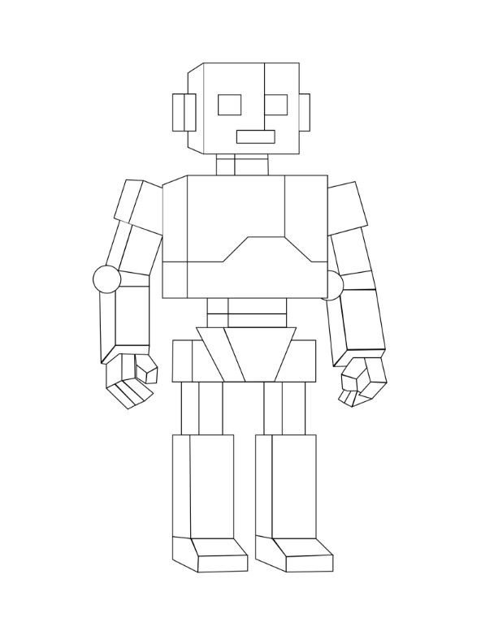

Robot
En esta actividad se realizó una práctica utilizando el software Adobe Illustrator, empleando diferentes herramientas de diseño y el uso de capas para crear un personaje a partir de un archivo adjunto. Para realizar la práctica se trabajó con una plantilla de apoyo que permitió elaborar la ilustración de un robot de manera más precisa, utilizando formas, trazos y combinaciones de figuras para construir cada parte del personaje. Durante el proceso se utilizaron funciones de las capas para organizar correctamente los elementos de la ilustración, además de recortar y modificar figuras para obtener un diseño más detallado y limpio. También se aplicaron herramientas de diseño vectorial para mejorar la precisión de los trazos y la composición del personaje. Gracias a esta actividad se aprendió la importancia del el manejo de herramientas de Adobe Illustrator para crear ilustraciones vectoriales de forma más organizada y creativa.

Panda
En esta actividad se realizó una práctica utilizando el software Adobe Illustrator, empleando herramientas de diseño vectorial, figuras y curvas para crear la ilustración de un panda a partir de un archivo adjunto. Para llevar a cabo la práctica se trabajó con una plantilla de apoyo que permitió elaborar el personaje de manera más precisa, utilizando formas geométricas y curvas para construir cada parte del panda, como la cabeza, las orejas, el cuerpo y los detalles del rostro. Durante el proceso se aplicaron diferentes herramientas de edición para ajustar, recortar y modificar las figuras, logrando una ilustración más limpia y detallada. El uso de curvas permitió mejorar la suavidad de los contornos y dar una apariencia más estética al personaje. Gracias a esta actividad se aprendió a utilizar de registrar figuras y curvas dentro de Adobe Illustrator para crear ilustraciones vectoriales, además de mejorar la precisión en el trazado y la organización de los elementos dentro del diseño gráfico digital.

León
En esta actividad se realizó una práctica utilizando el software Adobe Illustrator, empleando herramientas de diseño vectorial, figuras, curvas y capas para crear la ilustración de un león a partir de un archivo adjunto. Para desarrollar la práctica se utilizó una plantilla de apoyo que permitió elaborar el personaje de manera más precisa, utilizando diferentes formas geométricas y curvas para construir cada parte del león, como la cabeza, la melena, el cuerpo y los detalles del rostro. Durante el proceso se aplicaron funciones de las capas para organizar correctamente cada elemento de la ilustración, además de utilizar herramientas para recortar, modificar y combinar figuras, logrando un diseño más limpio y detallado. El uso de curvas ayudó a mejorar la suavidad de los contornos y dar una apariencia más estética y realista al personaje. Gracias a esta actividad se aprendió a utilizar de manera más eficiente las herramientas de Adobe Illustrator para crear ilustraciones vectoriales, mejorando la precisión en el trazado, la organización mediante capas y la combinación de figuras y curvas dentro del diseño gráfico digital.